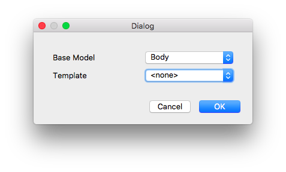
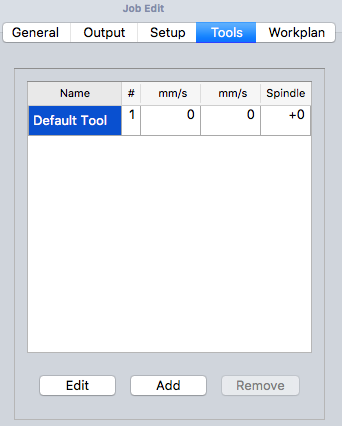
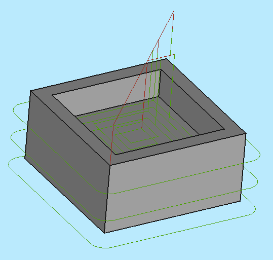

CAM Walkthrough for the Impatient
- Topic
-
CAM Workbench
- Level
-
Beginner/Moderate
- Time
-
15 minutes
- Author
-
Chrisb
- Fcversion
-
0.19
Aim
Demonstrating the creation of a  CAM Workbench Job derived from a 3D Model. Then generating dialect-correct G-Code for a target CNC mill.
CAM Workbench Job derived from a 3D Model. Then generating dialect-correct G-Code for a target CNC mill.
The 3D Model
1. The Project begins with a simple FreeCAD model designed in the  Part Design a cube with a rectangular pocket,
Part Design a cube with a rectangular pocket,
::

::
Above: Created in the  Part Design including a Body, a Box with a Pocket, based on a Sketch oriented in the
Part Design including a Body, a Box with a Pocket, based on a Sketch oriented in the  XY-plane.
XY-plane.
2. With the 3D Model completed, switch to the  CAM Workbench via the Workbench selector (drop-down menu)
CAM Workbench via the Workbench selector (drop-down menu)
The Job
3. Now we create a CAM Job by either of the following methods:
-
Press the
 Job button from the toolbar.
Job button from the toolbar. -
Using the P then J keyboard shortcut.
-
Using the entry from the top menu.

:: ;;
Above: CAM Job creation dialog
4. This opens a Job creation dialog. Within this dialog, click OK to accept the Body as the Base Model, with no Template.
Job Setup
5. The Job Edit window opens in the Task window, and the model view Window shows the Stock as a wire frame cube surrounding the Base Body. The Setup Tab is selected.
Job Output
6. The Output tab defines the output file path, name, extension, and the Postprocessor. For advanced users, Post Processor Arguments can be customized (mouse over to show tooltips of common arguments).
::

Above: CAM Job Edit dialog with the Output tab selected
Job Tools
::

Above: CAM Job Edit dialog with the Tools tab selected
7. Modify the Default tool by selecting it and clicking the Edit button. This opens the Tool Controller edit window.
::

Above: CAM Job Tool Controller subpanel Edit dialog
8. The name given to the tool and the tool number correspond with the tool number of the machine. In the dialog (see above) it’s Tool Nr. 4. The tool controller is configured for horizontal and vertical feed rates of 2mm/s and a spindle speed of 2000 rpm.
9. Select the Tool subpanel of the Tool controller. Set the diameter (and if you wish to use the  CAM Simulation tool later: add a cutting edge angle and cutting edge height).
CAM Simulation tool later: add a cutting edge angle and cutting edge height).
::

Above: CAM Job Tool controller 'Tool' subpanel dialog
10. The values are confirmed with OK
Note: For easy access, all the tools can be predefined and selected from the  Tool manager.
Tool manager.

The Path Operations
11. Two operations will be added to generate milling paths for this CAM Job. The Profile operation creates a path around the box and the Pocket operation creates a path for the inner pocket.
12. For now we will keep it simple. The  Profile button opens the Contour panel. After confirming with OK using the default values, see the green path around the object is visible.
Profile button opens the Contour panel. After confirming with OK using the default values, see the green path around the object is visible.
13. Selecting the bottom of the pocket and then the  Pocket button opens the Pocket Shape window. The default values for Base Geometry, Depths, and Heights are used, and the Operation subpanel is selected, and the Step Over Percent is set at 50.
Pocket button opens the Pocket Shape window. The default values for Base Geometry, Depths, and Heights are used, and the Operation subpanel is selected, and the Step Over Percent is set at 50.
::

Above: Pocket Shape dialog with the Operation subpanel selected
14. The pattern is changed to "Offset" and the Job Operation is confirmed for the pocket configuration with OK
The result is a model with two paths:
::

Above: resulting with a model with two paths
Verifying Paths
There are two ways to verify the created paths. The G-Code can be inspected, including highlighting the corresponding path segments. The milling process of the CAM Job can also be simulated to demonstrate the idealized tool paths, required for the Tool geometries to mill the Stock.
To inspect the G-Code use the  CAM Inspect tool. Selecting the corresponding G-Code lines within the G-Code Inspection window highlights individual path segments.
CAM Inspect tool. Selecting the corresponding G-Code lines within the G-Code Inspection window highlights individual path segments.
::

Above: CAM Inspection tool opens the G-Code Inspection dialog
To start the simulation use the  CAM Simulator tool.
CAM Simulator tool.
Adjust speed and accuracy and start the simulation with the  (Play) button.
(Play) button.
::

Above: CAM Simulation in progress
If you want to end the simulation click the Cancel button, it will remove the stock created for the simulation. If you click OK this object will be kept in your Job.
Postprocess the Job
The final step to generate G-Code for the target mill is to postprocess the Job. This outputs the G-Codes to a file that can be uploaded to the target CNC machine controller. To invoke the Postprocessor:
-
Select the Job object in the Tree View
-
Select the
 CAM Postprocessing tool to postprocess the file. This opens a G-Code window allowing inspection of the final output file before it is saved.
CAM Postprocessing tool to postprocess the file. This opens a G-Code window allowing inspection of the final output file before it is saved.
::

Above: G-Code window allowing inspection of the final output file